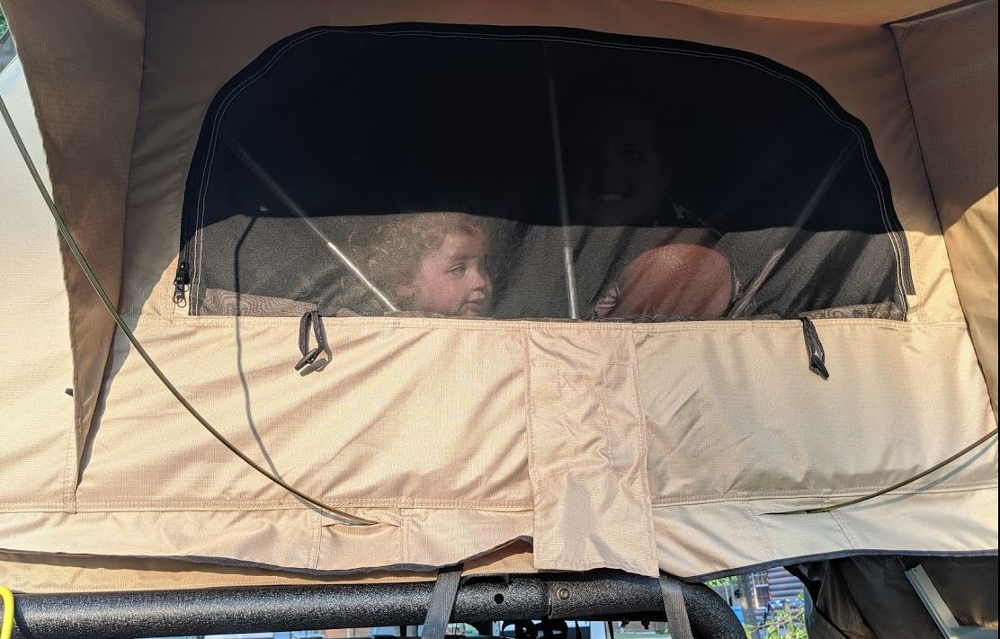

The foot
Our first stop was Preston's H.O.P.E. Playground Park in Beachwood, Ohio. It was one of the few stops we planned for on the way home. It was a good 4 hours, 250 miles from where we camped this morning. It was a needed break for the girls, but I wanted to push through to home. We were only about 14 hours, 900 miles from home..
I don't have any pictures showing this conversation, but its safe to say Abigail put her foot down and then threated to put it somewhere else if I didn't stop saying we should keep driving home. I guess we have one more night camping tonight!
I learned a long time ago not to take pictures of Abigail when she is mad at me.After Abigail threw up, she took a turn driving. She said she felt better, and I had to work on the blog.
Leaving Camp
Since we were camping one more day, we had a late start today. Despite our alarms going off at 5am, we slept in till 7 and didn't actually leave camp until 8:30am.
 ZzZzZzz
Jenna was the last to wake up, so Thea chased me around the Jeep for morning excercise!
Thea helping get water before leaving camp
ZzZzZzz
Jenna was the last to wake up, so Thea chased me around the Jeep for morning excercise!
Thea helping get water before leaving camp
As usual, the first stop was at a gas station where Abigail promptly drove into a massive hole and bottomed out the cargo shelf. The Jeep was alright, but add another scratch to the rear Cargo Shelf (most of the scratches have been from me though). After getting gas she promtply drove right past the ramp to the interstate. Quick, make a u-turn!
In the grand scheme of the trip, the drive to the playground was fairly uneventful. We took turns driving, switching off every hour or so.
Jeep delivery!Preston's H.O.P.E. Playground Park
We got to the playground park around 12:30, we all went into the park but I soon went back to the Jeep to continue blogging. There was a lot of kids here, and the park was huuuge.
It was packed full of kids.I did go back in a few times since we had some diaper changes, but the girls played for about 2 hours.
 Preston's Hope - Thea Balancing while Jenna makes friends
Preston's Hope - Thea Balancing while Jenna makes friends
 Preston's Hope - Thea Riding a whale while Jenna pretends to be a Monkey
Preston's Hope - Thea Riding a whale while Jenna pretends to be a Monkey
 Preston's Hope - Two monkies!
Preston's Hope - Two monkies!
 Preston's Hope - Both girls love swings
Preston's Hope - Our little climbers
Preston's Hope - Both girls love swings
Preston's Hope - Our little climbers
We made another lunch in the back of the Jeep and headed off to camp.
Preston's Hope - Making some quick lunches Preston's Hope - They have started getting picky, but we try to keep the meals balancedRoad to Camp
This time we were only 2 hours (give or take) from camp. Once again Waze came to the Rescue and redirected us around some backed up traffic. We got an alert about having a new ETA being 45 minutes extra, and then another alert saying it found us a new route and saving us some time! Woohoo!
We got off in Girard, Pennsylvania which was a cute little town. But again we saw more corn. I'm so tired of seeing corn. Jenna did see another KOA sign and asked if that was our camp tonight. Sadly we still had another hour to drive. Even though we weren't pushing through to home, we were trying to get as far as we could before setting up camp.
We briefly crossed into Pennsylvania before getting to New YorkWe finally got to our camp tonight in Westfield, New York. It was directly across from Lake Erie. We were in vinyard country now.
Not corn, yay!Last night camping
Since this was (hopefully) our last night camping during this trip, we got to camp early (5PM). We took a walk across the street to look at Lake Erie.
The girls running! The lake didn't really show up in the background :(We went back to camp, had a dinner of Keilbasa, rice, and corn then setup the tent.
Grilling an extra piece of Keilbasa while the rice cooks Girls playing while we cookedMaybe because we actually got to camp before sunset, we had a number of people come over and ask about the tent. Some walked past 5 times while pointing, and a few stopped to talk to me.
Creeper shot of me talking to another camperSince it was our last night, we went down to the pool to relax and end on a good note.
Happy FamilyJenna wouldn't believe us when we told her she could stand up. It took some coaxing but I was finally able to get her to trust us and stand up.
Jenna proud she is standing upWe stopped to get ice-cream and then heade back to camp.
Yum! We may not have icecream for awhile though, we ate a lot this tripThe girls were a bit wound that night, so I had to go outside the tent to work on the blog.
Another creeper shot from Abigail  What I saw when I looked up from the laptopNext stop, Home!